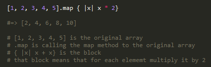

In Ruby we can use a method called map. Map allows us to execute a given block for each element in an array. Blocks are instructions, they take in arguments and return values. Map is very similar to the method each; they both allow you to execute a given block to every element in the array, but map will return a new array whereas each will return the original unmodified array by default. Here is an example of map with its block:

As you can see in the example above, we take an array and use the .map on it. This allows us to manipulate and return a value. In the block { |x| x * 2} it is telling it the program to take an element in the array, assign it the the variable x and multiple it by two. And since we are using the map method, it does this for every element in the array. So this program would return [2, 4, 6, 8, 10].
I hope this gives you a basic understanding of the map method. If you have any question feel free to email and ask me.